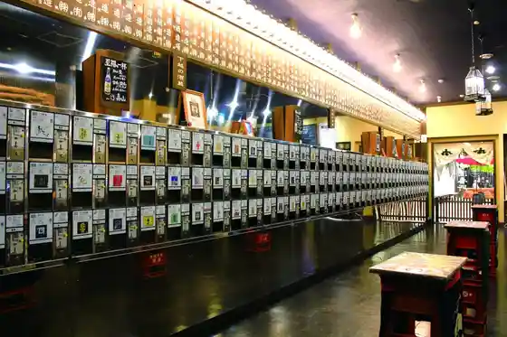
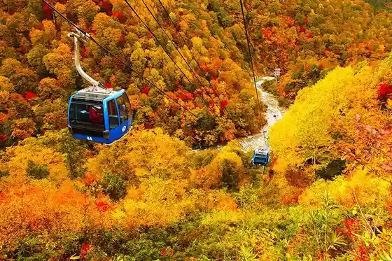
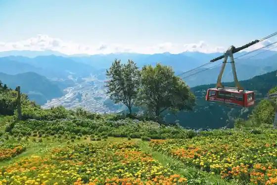
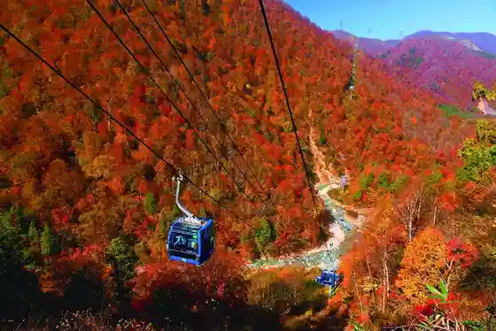

Ponshu Kan Echigo Yuzawa Eki Mise
Yuzawa, Niigata · 025-784-3778 · Official / source link

Naeba Doragondora
Yuzawa, Niigata · 025-789-4117 · Official / source link

Yuzawa Highlands Pa no Rama Park (Yuzawa Highlands Ski Area)
Yuzawa, Niigata · 025-784-3326 · Official / source link

Naeba Doragondora & Tashiro Ropue Autumn Leaves Eigyo
Yuzawa, Niigata · Official / source link

Akayu Onsen Yamaguchi Kan
Yuzawa, Niigata · 025-772-4125 · Official / source link
Daigen Taiko
Yuzawa, Niigata · Official / source link
Echigo Yuzawa Onsen
Yuzawa, Niigata · 025-784-4850 · Official / source link
Roadside Station (Mitsumata)
Yuzawa, Niigata · 025-788-9410 · Official / source link
Yuzawa Nakazato Aki Festival
Yuzawa, Niigata · 025-787-3240 · Official / source link
Naeba Ski Area
Yuzawa, Niigata · 025-789-4117 · Official / source link
Takizawa Park (Fudo Taki)
Yuzawa, Niigata · Official / source link
Ke Watari Sawahashi Hari
Yuzawa, Niigata · 025-785-5505 · Official / source link
Yuzawa Highlands Ski Area
Yuzawa, Niigata · 025-784-3326 · Official / source link
Ashiyu
Yuzawa, Niigata · 025-785-5505 · Official / source link
GALA Yuzawa Ski Area
Yuzawa, Niigata · 025-785-6543 · Official / source link
Yuzawa Folk History Museum (Yukiguni Kan)
Yuzawa, Niigata · 025-784-3965 · Official / source link
Dai 11 Kai Meshi Samurai Tozan Matsuri
Yuzawa, Niigata · 025-787-3476 · Official / source link
Mikuniyama Mikuni Tonneru Yuzawa Gawa Tozanguchi
Yuzawa, Niigata · 025-784-4850 · Official / source link
Iwahara Ski Area
Yuzawa, Niigata · 025-787-3211 · Official / source link
Tairappyo Yama Tairappyo Tozanguchi
Yuzawa, Niigata · 025-784-4850 · Official / source link
Kagura Ski Area (Kagura Mitsumata Eria)
Yuzawa, Niigata · 025-788-9221 · Official / source link
Yuzawa Fisshingu Park
Yuzawa, Niigata · 025-787-3911 · Official / source link
Seishin Kyo Keikoku Tonneru Heha Rakuraku Kashikiri Takushii De
Yuzawa, Niigata · 025-785-5353 · Official / source link
Shosetsu (Yukiguni) no Hi
Yuzawa, Niigata · Official / source link
Daigen Ta Kyanion Campground
Yuzawa, Niigata · 025-787-3536 · Official / source link
Shiro Taki Shuzo
Yuzawa, Niigata · Official / source link
Naeba Yama Haraikawa Tozanguchi / Moto Hashi Tozanguchi
Yuzawa, Niigata · Official / source link
Yuzawa Chuo Park & Supotsu Shisetsu
Yuzawa, Niigata · 025-787-3388 · Official / source link
Yumoto Kyodo Bath (Yama Baths)
Yuzawa, Niigata · 025-784-2246 · Official / source link
Kagura Ski Area (Tashiro Eria)
Yuzawa, Niigata · 025-789-3111 · Official / source link
Yamadori Hara Park
Yuzawa, Niigata · 025-789-1666 · Official / source link
Shita Yuzawa Kyodo Bath (Komako Baths)
Yuzawa, Niigata · 025-785-7660 · Official / source link
Akiba Yama Su no Shu Experience
Yuzawa, Niigata · 025-785-5353 · Official / source link
Ipponsugi Su no Park
Yuzawa, Niigata · 025-784-4440 · Official / source link
Daigen Ta Kyanion Shiju Hachi Taki
Yuzawa, Niigata · Official / source link
Tsuchitaru Kyodo Bath (Iwa Baths)
Yuzawa, Niigata · 025-787-2787 · Official / source link
Yukiguni Aguri Park Yuzawa Ichigo Village
Yuzawa, Niigata · 025-780-6011 · Official / source link
Su no Chubingu, Sori Asobi, Kizzugerende / Yuzawa Highlands Ski Area
Yuzawa, Niigata · 025-784-3326 · Official / source link
Mikuni Kaido Wakimoto Jin'ato Ikeda Ie
Yuzawa, Niigata · 025-784-2211 · Official / source link
GALA YUZAWA MOUNTAIN FIELD
Yuzawa, Niigata · 025-785-6543 · Official / source link
Kandachi Su no Resort
Yuzawa, Niigata · 025-788-0111 · Official / source link
NASPA Sukii Garden
Yuzawa, Niigata · 025-780-6888 · Official / source link
Sen Kai Mizu Basho Gunsei Chi
Yuzawa, Niigata · 025-789-2121 · Official / source link
Ko Kami Onsen Bath
Yuzawa, Niigata · 025-784-2727 · Official / source link
Rejapuru (Orora)
Yuzawa, Niigata · 025-787-6600 · Official / source link
Yuzawa Park Ski Area
Yuzawa, Niigata · 025-787-4111 · Official / source link
Naeba Bodookukyanpu
Yuzawa, Niigata · 03-6427-1085 · Official / source link
Mitsumata Kyodo Bath (Kaido Baths)
Yuzawa, Niigata · 025-788-9229 · Official / source link
Echigo Yuzawa Su no Shu Tour Night Kosu
Yuzawa, Niigata · 070-2836-8559 · Official / source link
NASPA CAMP GARDEN
Yuzawa, Niigata · 025-780-6888 · Official / source link
Ni Kyo Kyodo Bath (Shukuba Baths)
Yuzawa, Niigata · 025-789-5855 · Official / source link
Tashiro Ropue
Yuzawa, Niigata · 025-789-3111 · Official / source link
Experience Workshop (Daigen Ta)
Yuzawa, Niigata · 025-787-1121 · Official / source link
Yuzawa Highlands Samafea
Yuzawa, Niigata · 025-784-3326 · Official / source link
2025 Yuzawa Highlands Samafea
Yuzawa, Niigata · 025-784-3326 · Official / source link
Yuzawa Nakazato Katakuri Village
Yuzawa, Niigata · 025-787-3240 · Official / source link
Yuzawa Nakazato Su no Resort
Yuzawa, Niigata · 025-787-3301 · Official / source link
Echigo Yuzawa Su no Shu Tour
Yuzawa, Niigata · 070-2836-8559 · Official / source link
Mantaro Yama Asama Taira Hashi Tozanguchi
Yuzawa, Niigata · 025-784-4850 · Official / source link
Yomogitoge
Yuzawa, Niigata · Official / source link
Naeba Kogen Oto Campground
Yuzawa, Niigata · 080-1234-6793 · Official / source link
HOSHIZORA Terasu
Yuzawa, Niigata · 025-789-4117 · Official / source link
Gorudo Echigo Yuzawa Kantorii Club
Yuzawa, Niigata · 025-787-4111 · Official / source link
Daigen Ta Su no Shu Tosoba Uchi Experience
Yuzawa, Niigata · 025-785-5353 · Official / source link
Foresutoadobencha Yuzawa Nakazato
Yuzawa, Niigata · 025-787-3301 · Official / source link
Nakazato Su no Uddo Ski Area
Yuzawa, Niigata · 025-787-3535 · Official / source link
Mumbaiku Tour /GALA Yuzawa Ski Area
Yuzawa, Niigata · 025-785-6543 · Official / source link
Echigo Yuzawa Eki Kara Ofuku Basu De Iku Su no Akuteibitei Taiken !
Yuzawa, Niigata · 025-595-8588 · Official / source link
(Zuisho Iori) no Nio Zo
Yuzawa, Niigata · 025-785-5505 · Official / source link
Togei Workshop (Asahi Kama)
Yuzawa, Niigata · 025-787-0357 · Official / source link
Yama Take no Ko Sansai Uiiku 2026
Yuzawa, Niigata · 025-789-2706 · Official / source link
Su no Kato Tour /GALA Yuzawa Ski Area
Yuzawa, Niigata · 025-785-6543 · Official / source link
NASPA ASOBI GARDEN
Yuzawa, Niigata · 025-780-6888 · Official / source link
Yuzawa Nakazato Hotaru Village
Yuzawa, Niigata · 025-787-3240 · Official / source link
Su no Sukuto / Kandachi Su no Resort
Yuzawa, Niigata · 025-788-0111 · Official / source link
Su no Rafuteingu / Naeba Ski Area
Yuzawa, Niigata · 0120-76-7301 · Official / source link
Su no Mobiru Sori Tour /GALA Yuzawa Ski Area
Yuzawa, Niigata · 025-785-6543 · Official / source link
Daigen Taizan Daigen Ta Kyanion Tozanguchi
Yuzawa, Niigata · 025-784-4850 · Official / source link
Su no Chubingu, Sori Asobi / Naeba Ski Area
Yuzawa, Niigata · 025-789-4117 · Official / source link
Su no Chubingu, Sutoraida, Sori Asobi, Kizzugerende / Yuzawa Nakazato Su no Resort
Yuzawa, Niigata · 025-787-3301 · Official / source link
Su no Rafuteingu /NASPA Sukii Garden
Yuzawa, Niigata · 0278-25-4424 · Official / source link
Su no Naitobagii Tour /NASPA Sukii Garden
Yuzawa, Niigata · 0278-25-4424 · Official / source link
Su no Mobiru / Naeba Ski Area
Yuzawa, Niigata · 0120-76-7301 · Official / source link
Denryoku Museum OKKY (Oku Seishin Hatsudensho)
Yuzawa, Niigata · 025-789-2728 · Official / source link
Su no Mobiru Unten Experience /NASPA Sukii Garden
Yuzawa, Niigata · 0278-25-4424 · Official / source link
Yuzawa Nakazato Katakuri Village
Yuzawa, Niigata · 025-787-3240 · Official / source link
Suwa Sha no Osugi
Yuzawa, Niigata · Official / source link
Mannen Hashi Promenade
Yuzawa, Niigata · Official / source link
Daigen Taiko SUP (Sutandoappupadoru) Experience (Hannichi Kosu)
Yuzawa, Niigata · 025-787-6700 · Official / source link
Daigen Taiko Kayakku Experience (Hannichi Tour)
Yuzawa, Niigata · 025-787-6700 · Official / source link
Su no Mobiru Land Yuzawa
Yuzawa, Niigata · 025-787-6600 · Official / source link